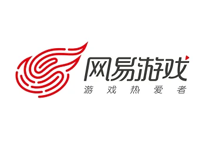
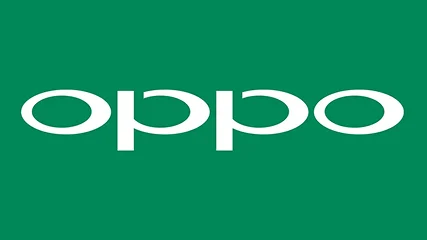
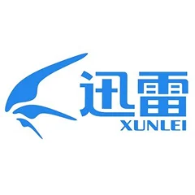

Combine DreamFace product goals, the existing Avatar strategy, user journeys and feedback to identify generation quality and experience issues. Define product improvements, coordinate algorithm and front-end and back-end engineering resources, and continuously improve core business metrics.
1. Monetization for video editing products — Based on business plans, systematic data analysis and UX insight, led the planning and delivery of monetization initiatives across Filmora desktop and mobile. Aligned front-end, middleware and cloud teams to deliver significant growth in core metrics.
2. Improving asset distribution efficiency and relevance — Studied the full Filmora mobile asset journey to uncover distribution and UX pain points. Coordinated client, middleware, resource-cloud and algorithm teams to improve delivery efficiency, relevance and user experience.
Led day-to-day UX design management, project planning and design reviews for the video creativity business. Guided the team in building Wondershare’s experience measurement system, improving design processes and defining baseline experience standards.
2022.06 — 2023.05

网易游戏NetEase Games
资深交互设计师Lead Interaction Designer
1.负责网易大神 web 端整体体验设计。
2.负责网易大神 ux 组件库的整体规划、搭建与分工。
3.负责网易大神运营配置后台的整体规划、UX 体验设计与分工
1. Led end-to-end experience design for the NetEase Dashen web product.
2. Planned, built and coordinated the UX component library.
3. Planned the operations configuration console, including UX design and team responsibilities.
1. Designed interactions for group-wide shopping festivals and everyday marketing venues, from requirements and metric breakdowns to design, tracking reviews, launch checks and analysis.
2. Built intelligent operations tools from zero to one, including one-click external campaign pages and smart components, covering research, strategy, workflows, PRDs and delivery to improve conversion and clicks.
3. Designed B2B interactions for the XBP ticketing system.
2019.06 — 2020.04

OPPO
高级交互设计师Senior Interaction Designer
1. 负责 OPPO +移动端全部交互设计工作。
2. 负责 OPPO +小程序全部交互设计工作。
3. 负责 OPPO +海外社区移动端全部交互设计工作。
4.负责 OPPO +海外社区 PC 端全部交互设计工作。
1. Responsible for all interaction design on OPPO+ mobile.
2. Responsible for all interaction design on the OPPO+ mini program.
3. Responsible for all interaction design on the OPPO+ global community mobile experience.
4. Responsible for all interaction design on the OPPO+ global community desktop experience.
2015.10 — 2019.06

迅雷网络Xunlei
高级交互设计师Senior Interaction Designer
负责迅雷会员、迅雷快鸟、玩客云、迅雷小游戏、迅雷镖局、一元夺宝等项目的交互设计工作
Designed interactions for Xunlei Membership, Xunlei Kuainiao, Wanke Cloud, Xunlei mini games, Xunlei Biaoju and One-Yuan Treasure Hunt.